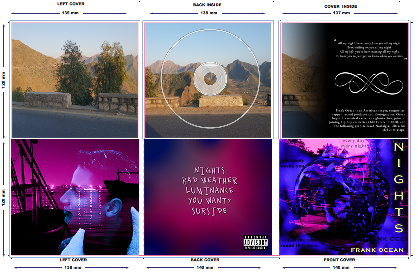

Music Video: Nights
This is the most fun I have ever had working on anything. For my second high school media studies project, we were given the option to make a promotional package for a music video. For the video itself, my friend and I chose to film the city we grew up in. We really wanted to capture the radiance and liveliness of the city which is often never portrayed in western or international media.
The song we chose to go with it was 'Nights' by Frank Ocean . We felt that its moody yet rich atmoshpere went hand-in-hand with the ideas and aesthetic that we wanted to convey.

Short Film: The Battle Within
This was the first project I was assigned in media studies. Whilst the film itself is nothing to special, it was the first digital creative project I worked on. It is what introduced me to learning filmmaking, video editing, and camera work.